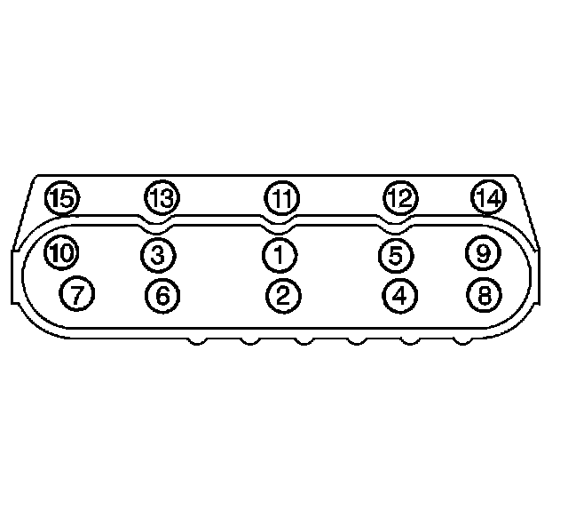
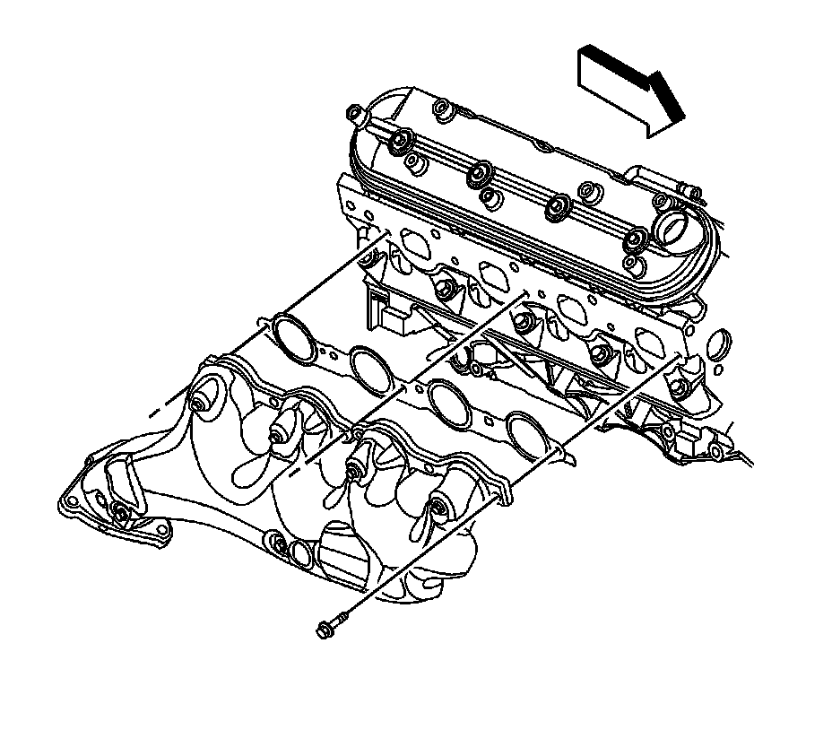
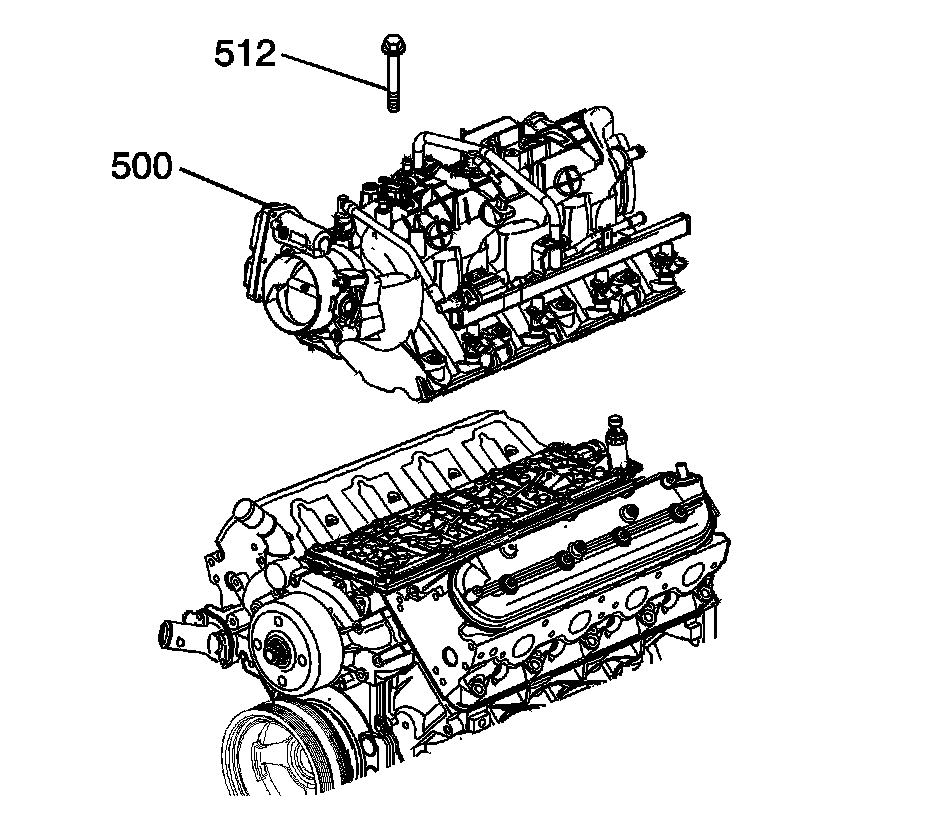

Fastener Tightening Specifications

Cylinder Head Replacement - Left Side
Important: The cylinder head bolts are of a torque-to-yield design and are NOT to be reused.
Tighten the cylinder head bolts.
Tighten the M11 cylinder head bolts (1-10)
First pass in sequence to 30 N.m (22 lb ft).
Second pass in sequence to 90 degrees using J 45059.
Final pass to 70 degrees using J 45059.
Tighten the M8 cylinder head bolts (11-15)
Tighten to 30 N.m (22 lb ft).
Begin with the center bolt (11) and alternating side-to-side, work outward tightening all of the bolts.

Cylinder Head Replacement - Right Side
Tighten the cylinder head bolts.
Tighten the M11 cylinder head bolts (1-10)
First pass in sequence to 30 N.m (22 lb ft).
Second pass in sequence to 90 degrees using J 45059.
Final pass to 70 degrees in sequence using J 45059.
Tighten the M8 cylinder head bolts (11-15)
Tighten to 30 N.m (22 lb ft).
Begin with the center bolt (11) and alternating side-to-side, work outward tightening all of the bolts.

Exhaust Manifold Replacement - Left Side
Position the NEW exhaust manifold gasket and exhaust manifold to the cylinder head.
Install the exhaust manifold bolts.
Tighten the bolts a first pass to 15 N.m (11 lb ft).
Tighten the exhaust manifold bolts beginning with the center 2 bolts.
Alternate from side-to-side, and work toward the outside bolts.
Tighten the bolts a final pass to 20 N.m (15 lb ft).
Tighten the exhaust manifold bolts beginning with the center 2 bolts.
Alternate from side-to-side, and work toward the outside bolts.
Exhaust Manifold Replacement - Right Side
^ The cylinder head exhaust manifold bolt hole threads must be clean and free of debris or threadlocking material.
^ Do not apply sealant to the first 3 threads of the bolt.

Position the NEW exhaust manifold gasket and exhaust manifold to the cylinder head.
Install the exhaust manifold bolts.
Tighten the bolts a first pass to 15 N.m (11 lb ft).
Tighten the exhaust manifold bolts beginning with the center 2 bolts.
Alternate from side-to-side, and work toward the outside bolts.
Tighten the bolts a final pass to 20 N.m (15 lb ft).
Tighten the exhaust manifold bolts beginning with the center 2 bolts.
Alternate from side-to-side, and work toward the outside bolts.
Camshaft Sprocket Bolt - First Pass 75 N.m (55 lb ft)
Camshaft Sprocket Bolt - Final Pass 50 degrees
Intake Manifold

Install NEW intake manifold gaskets (514) to the intake manifold.
Remove the covers from the cylinder head passages.

Install the intake manifold (500).
Tighten the intake manifold bolts (512) until snug.

Tighten the intake manifold bolts to specifications.
Tighten the bolts
First pass in the sequence shown to 5 N.m (44 lb in).
Final pass in the sequence shown to 10 N.m (89 lb in).